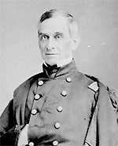

|

|

|
|
|
Born in Kentucky, Robert Anderson became a career army
officer, veteran of four wars and, in his defense of Fort
Sumter, the first hero of the Civil War.
Graduating in 1825 at the middle of his West Point class,
Anderson joined the army as a second lieutenant. Through
service in the Black Hawk War (1832), the Seminole War
(1837-8) and the Mexican War, Anderson rose to the rank of
Major (1857). In 1845, he married Elizabeth Bayard Clinch
from Georgia, with whom he would have four children.
In November of 1860, Anderson was appointed commander of
Fort Moultrie, an obsolete island post in South Carolina
that was easily accessible from the mainland and vulnerable
to capture from its rear. One mile away, at the entrance to
Charleston Harbor, workers were completing Fort Sumter, a
man-made granite island with brick walls forty feet high and
eight feet thick. Sumter was designed in such a way that
with a full force of 650 soldiers manning 146 large guns, it
could halt any craft entering or leaving the harbor.
When South Carolina seceded in December of 1860, Anderson
was placed in a precarious position. Although a Kentuckian
and a slaveholder, he ultimately decided to remain loyal to
the Union and to work to keep Forts Sumter and Moultrie in
Northern hands. He knew that any misstep on his part could
lead to war, as Charleston militiamen stood prepared to
attack the Federal force. Anderson requested guidance, and
received ambiguous orders from Washington that he
interpreted as allowing him to move from Moultrie to Sumter
if he thought it necessary to deter an attack. He did so
under the cover of darkness on the evening of December 26.
The people of the North were elated, those of the South
indignant.
At Sumter, Anderson faced a severe shortage of supplies.
Fort Sumter's symbolic value was high, but Anderson could
not hope to resist if the North could not re-supply him. He
made an urgent request for food and other necessities that
President Abraham Lincoln ultimately decided to grant. When
Confederate General Pierre Beauregard learned of this, he
began shelling Fort Sumter. The shelling began before 5am on
April 12, and continued until April 14, when Anderson and
his men (127 total, including civilian employees) were
forced to surrender.
Anderson's struggle to keep Fort Sumter for the Union
made him the North's first war hero. He was rewarded with a
promotion to brigadier general and assigned to the
Department of the Cumberland. Soon, however, he was forced
to give up his command to William T. Sherman because of ill
health. He retired in 1863 but returned to Charleston at the
end of the war to replace the American flag that had been
torn down in 1861. After the war, Anderson and his family
relocated to France. He died in Charleston on October 26,
1871.
Source: Joan Waugh, ed., Facts on File Encyclopedia of American
History: Civil War and Reconstruction, 1856 to 1869 (New York: Facts on
File, 2003), 9-10.
|